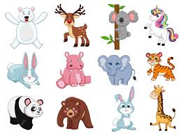
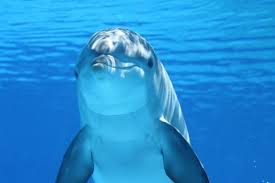
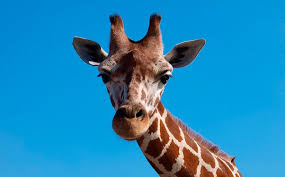
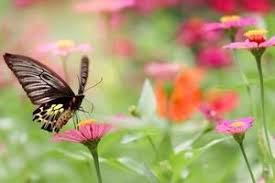
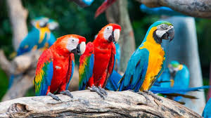
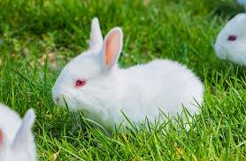
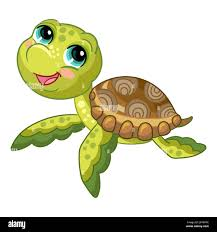
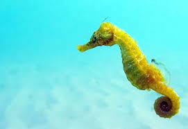
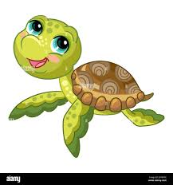
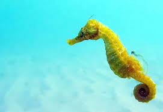

Los bellos animales



Animales acuaticos
1Conejo
Se caracteriza por tener un cuerpo cubierto de un pelaje espeso y lanudo, de color pardo pálido a gris o rojizo
2Perritos
El perro,llamado perro doméstico o can, y en algunos lugares coloquialmente llamado chucho, tuso, choco, entre otros; es un mamífero carnívoro de la familia .
3Ardillas
Mamífero de pequeño tamaño, su cuerpo es alargado y estrecho, con una larga cola de aspecto esponjoso y muy poblada de pelo.
Animales





Animales acuaticos

Delfin

Tortuga

Caballito del mar
Delfin

Tortuga
